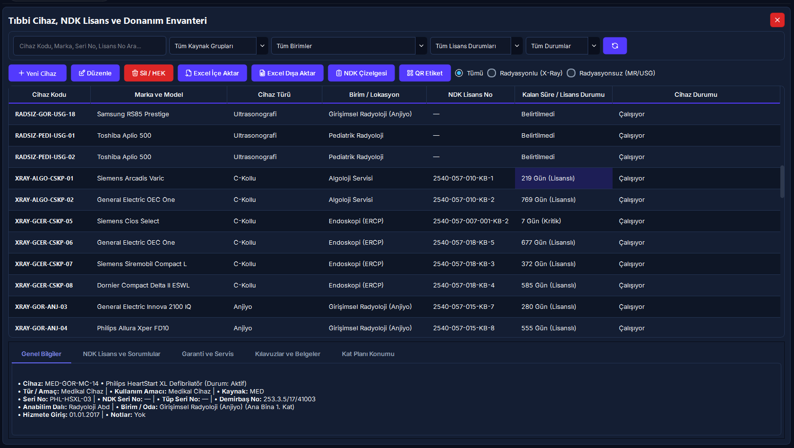
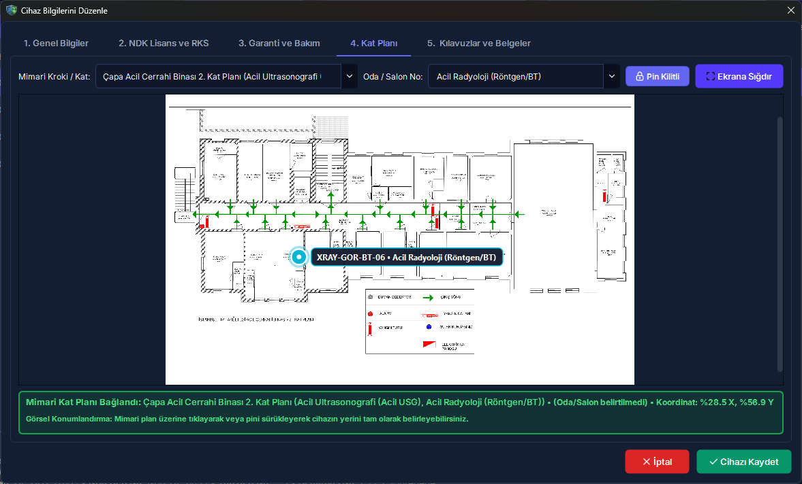

Tıbbi Cihaz ve NDK Lisans Envanteri
Hastaneler ve radyoloji merkezlerindeki iyonlaştırıcı radyasyon yayan (X-Ray, Tomografi, Anjiyografi, Skopi, Mamografi) ve radyasyonsuz medikal (MR, USG) tüm cihazların teknik künyelerinin yönetildiği, Nükleer Düzenleme Kurumu (NDK) lisans ve vize sürelerinin 6 ay - 45 gün - 30 gün kademeli erken uyarı sistemiyle takip edildiği, cihazların mimari kat planları (kroki) üzerine koordinatla sabitlendiği, teknik kılavuzların AES-256 şifreli Evrak Kasasında korunduğu ve hurdaya ayrılan cihazların resmi HEK tutanağıyla arşivlendiği entegre donanım yönetim merkezidir.
Kısa Reçete (20 Saniye Kuralı)
Cihazın resmi NDK lisansıyla envantere kaydedilmesi, erken uyarı alarmına bağlanması ve QR künyesinin üretilmesi.
[Yeni Cihaz] butonuna tıklayın. 1. Sekmede Anabilim Dalı ve Birimi seçin (alt birimler otomatik filtrelenir, Cihaz Kodu kilitli olarak otomatik üretilir); Seri No ve Demirbaş No girin. 2. Sekmede NDK Lisans No ve Vize Tarihini yazıp [Cihazı Kaydet] butonuna basın.
Cihaz Kodu otomatik üretilir ve kilitlenir. Vize bitimine 6 ay kala erken uyarı başlar; 45 gün ve 30 gün eşiklerinde alarm rengi değişir. Hiçbir eski veri ezilmez.
Kritik Sahada Yanlış Bilinen Kurallar (Mit Avcısı)
5N1K Kural ve Ayar Çözümleme Tablosu
Tıbbi cihaz envanteri, NDK lisanslama, kat planı sabitleme ve HEK hurda arşivi operasyonel kontrolleri.
Cihaz Yaşam Döngüsü ve İş Akış Şeması (Mermaid)
Aşağıdaki şema, tıbbi cihazın sisteme ilk kaydından otomatik kodlamaya, NDK vize erken uyarı alarmlarından HEK hurda arşivine kadar tüm yaşam döngüsünü göstermektedir.
Ekran Konumları ve Görsel Rehber


Adım Adım Operasyonel Eylem Akışı
XRAY-ACL-ANJ-01) otomatik üretir ve yetkisiz müdahaleye karşı salt okunur olarak kilitler. Seri No ve kurum Demirbaş No alanlarını doldurun.
- 1. Kuruluş Bilgileri (KB.1) & Yasal Dayanaklar (KB.2): Kurum unvanı, adres, NDK lisans/başvuru numarası ve mevzuat dayanaklarını sistem ayarlarından tek tıkla yükleyin veya düzenleyin.
- 2. RKS ve Birim Sorumluları (KB.3): Kurumda görevli resmi Radyasyondan Korunma Sorumlusu (RKS) ve klinik birim sorumlularının iletişim ve görev bilgilerini listeleyin.
- 3. Radyasyon Görevlileri ve Sağlık/Dozimetre Durumu (KB.4): Canlı personel veritabanından radyasyon görevlileri, çalışma koşulları (Koşul A/B), aktif dozimetre türleri ve periyodik sağlık muayene onaylarını inceleyin.
- 4. Tıbbi Radyoloji Cihaz Envanteri (KB.5): Aktif iyonlaştırıcı radyasyon kaynaklarının cinsi, kullanım şekli, marka/model, seri no, NDK no ve maksimum jeneratör teknik değerlerini (kV/mA) doğrulayın.
- 5. Radyasyon Ölçüm Cihazları ve Kalibrasyon Belgeleri (KB.6): İyon odaları, alan ve kontaminasyon monitörlerinin kalibrasyon geçerlilik sürelerini kontrol edin.
- 6. RKE Koruyucu Ekipman Matrisi (KB.7): DIN 6857-1 standartlarına uygun kurşun önlük, tiroid, gözlük, gonat ve paravanların oda/birim bazlı donanım matrisini canlı verilerle görüntüleyin.
- 7. Kalite Dokümanları ve Hizmet İçi Eğitim Talimatları (T.1 - T.11): SKS 6.1 ve NDK RSGD-KLV-014 uyumlu 11 resmi talimatı (TL.RAD.01 - TL.RAD.11) inceleyin; Hizmet İçi Eğitim Modülü (LMS) ile senkronize edin.
- 8. Resmi Başvuru Dosyası Üretimi ve Arşivleme: [Resmi Word (.docx) İndir] ve [Resmi PDF (.pdf) Üret] butonlarıyla NDK standartlarında yatay (Landscape) resmi RKP başvuru dosyasını üretin; [KVKK Evrak Kasasına Arşivle] butonuyla dosyayı AES-256 ile şifreleyerek güvenli arşive kaydedin. İşi bitirdiğinizde [Kapat] butonuyla ana ekrana güvenle dönün.
Hibrit Platform Matrisi (Masaüstü vs Web Portal)
Masaüstü Uygulaması (Yetkili Yönetim Merkezi)
- • Yeni cihaz kaydı, teknik künye ve kilitli akıllı kod üretimi.
- • NDK lisanslama, vize süresi ve RKS/Birim sorumlusu atamaları.
- • Mimari kat planı krokisi üzerinde pin sabitleme ve kilitleme.
- • AES-256 şifreli evrak kasasına teknik kılavuz yükleme ve indirme.
- • Excel toplu içe/dışa aktarım ve resmi Word (.docx) HEK Hurda Tutanağı.
Web Portalı & Mobil Barkod (Saha Personeli Görünümü)
- • Kamera ile cihaz QR barkodunu tarayarak cihaz künyesini sahada açma.
- • Cihazın son Kalite Kontrol (QC) onay ve geçerlilik durumunu teyit etme.
- • Sahadan arıza bildirimi oluşturma ve arıza sayısını izleme.
- • Ortam Dozu Kroki Haritasında sabit cihazların oda yerleşimini izleme.
Sıkça Sorulan Sorular ve Saha Çözümleri
NDK lisans vize sürelerinde erken uyarı alarmları ne zaman devreye girer?
NDK resmi yenileme bürokrasisinin ortalama 2-3 ay sürmesi nedeniyle erken uyarı süreci lisans bitimine 6 ay (180 gün) kala başlar. Arayüzde gereksiz bilgi kalabalığını önlemek amacıyla, lisans bitimine 180 günden fazla süre bulunan cihazlarda gün sayacı gizlenerek yalnızca sade Geçerli rozeti sunulur; kalan süre 180 gün ve altına indiğinde gün sayacı otomatik olarak görünür hale gelir. Vize süresine 45 gün kala sistem "Süresi Yaklaşıyor" sarı alarmı verir. Kalan gün 30 gün ve altına indiğinde ise acil başvuru gerektiren "Kritik Eşik" turuncu alarmı devreye girer. Süresi dolan cihazlar ise kırmızı renkle işaretlenerek yöneticiye raporlanır.
Cihaz kodunu neden kendimiz serbestçe belirleyemiyoruz?
RADPYS V4, cihazları arıza, kalite kontrol, dozimetre maruziyeti ve kroki sistemlerine bağlarken benzersiz ve standart bir format (XRAY-ACL-ANJ-01 gibi) kullanır. Kodun elle düzenlenmesi mükerrer kayıtlara ve ilişkisel veri kopmalarına yol açabileceğinden kilitlenmiştir. Kurum içi demirbaş veya Sağlık Bakanlığı ÇKYS takibi için formdaki Demirbaş No alanı kullanılır.
Yeni bir X-Ray cihazı tanımlarken NDK Lisans Numarası girmek şart mıdır?
Yanlışlıkla [Sil / HEK] butonuna basılan bir cihaz nasıl kurtarılır?
Sistem cihazları fiziksel olarak silmediği için hiçbir veri kaybolmaz. Üst menüden HEK ve Hizmet Dışı Cihaz Arşivi ekranını açın. Listeden ilgili cihazı seçip [Tekrar Aktif Statüsüne Al] butonuna tıklayın. Cihaz anında tüm geçmiş kayıtlarıyla birlikte ana aktif envanter tablosuna geri döner.
Cihaz Türü veya Cihaz Amacı tanımı sistemden kaldırıldığında mevcut cihazlar bozulur mu?
Mobil ve seyyar röntgen cihazlarına kroki pini koymak zorunlu mudur?
Birden fazla tıbbi cihaz için tek bir resmi HEK veya Komisyon Tutanağı nasıl düzenlenir?
Cihaz envanter tablosunda tutanağa dahil edilecek cihazları klavyeden Ctrl veya Shift tuşuna basılı tutarak çoklu seçimle işaretleyin. Ardından araç çubuğundaki [Tutanak Oluştur] butonuna veya sağ tık menüsündeki "Seçili Cihazlar İçin Toplu HEK / Komisyon Tutanağı..." seçeneğine tıklayın. Açılan Tutanak ve Matbu Evrak Sihirbazı üzerinden dilediğiniz şablonu (Teknik Muayene, Hurda/HEK veya Kurulum Tutanağı) seçerek tüm cihazların künye ve teknik detaylarının tek bir resmi Word (.docx) dosyasında otomatik birleştirilmesini sağlayabilirsiniz.
Hastanemizdeki tüm tıbbi cihazların QR etiketlerini matbaada veya profesyonel etiket makinesinde topluca nasıl bastırabiliriz?
Cihaz Yönetimi araç çubuğundaki [Toplu QR Etiket İhracı] butonuna tıklayın veya tabloda belirli cihazları seçip sağ tıklayarak "Toplu QR Etiket Paketi (.ZIP)" seçeneğini çalıştırın. Sistem arka planda çalışan dışa aktarım motoruyla seçilen cihazlar için 300 DPI (800x1050 px) matbaa kalitesinde PNG etiketler, profesyonel baskı merkezine doğrudan iletilebilecek malzeme şartnamesi (00_Baski_ve_Uretim_Rehberi.txt) ve tüm cihazların seri no/kod fihristini içeren 00_Etiket_Listesi_Icmal.csv dosyasını tek bir .ZIP arşivi halinde kaydeder.
NDK RSGD-KLV-014 Radyasyondan Korunma Programı (RKP) başvuru dosyası sistemden nasıl hazırlanır ve çıktısı nasıl alınır?
Sol ana menüden NDK RKP Sihirbazı ekranını açın. Sistem kurum ayarlarını, aktif RKS sorumlularını, radyasyon görevlisi personelleri (dozimetre ve sağlık muayene durumlarıyla birlikte), tescilli tıbbi cihazları, kalibrasyonlu radyasyon ölçüm donanımlarını ve DIN 6857-1 uyumlu RKE donanım matrisini 8 adımlı başvuru akışında canlı veritabanından otomatik bir araya getirir. 7. Adımda yer alan T.1 - T.11 talimatları SKS 6.1 'Kalite Dokümanları' kategorisi ile çift yönlü senkronizedir. Son adımda [Resmi Word (.docx) İndir] veya [Resmi PDF (.pdf) Üret] butonlarına basarak NDK resmi başvuru kılavuzuyla birebir uyumlu yatay belgeyi indirebilir; [KVKK Evrak Kasasına Arşivle] ile dosyayı şifreli kasaya kaydedebilirsiniz.